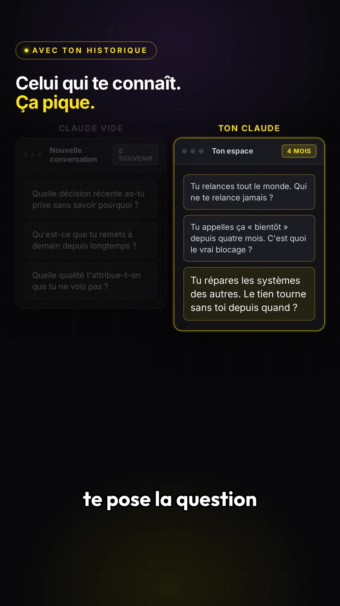
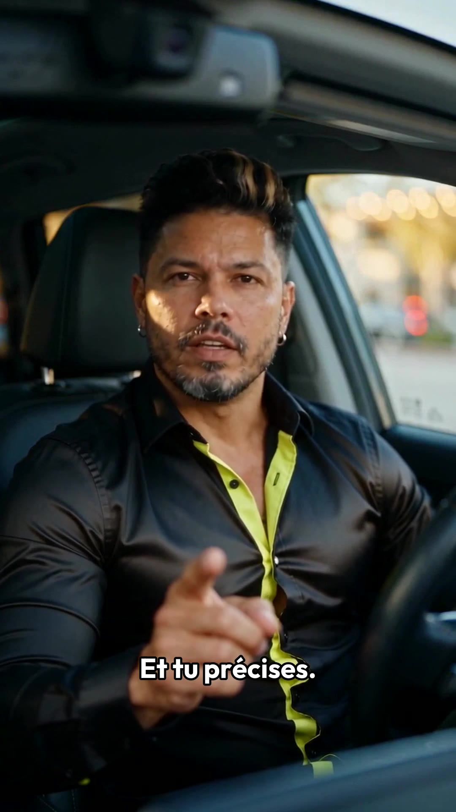

Les 10 questions — Claude vide vs Claude qui te connaît
PROBLÈME« Écoute bien. Tu crois te connaître. Tu te racontes la même histoire depuis des années. »
SOLUTION« Tu vas aller sur Claude. Et tu vas le tester deux fois. Sur un Claude vide. Et sur celui qui a déjà toutes tes conversations. »
« Tu lui demandes ça, en dix questions. Que pourrais-tu me demander sur moi-même pour révéler quelque chose que moi-même j'ignore ? »
« Et tu précises. Une par une. Pas toutes à la fois. »
« C'est ce détail qui change tout. »
VALIDATION« Le Claude vide te pose des questions intelligentes. Et froides. »
« Celui qui te connaît te pose la question que tu évites depuis six mois. »
« Tu vas être choqué. Tu vas être bluffé par les questions. Tu vas découvrir comment tu es. »
CTA« C'est indéniable. Irréfutable. Commente MIROIR, je t'envoie les dix questions. »
| 2e36e915 · fixe | 0,0 → 6,9 s — hook « Écoute bien » + le test en deux fois (2 plans, punch-in sur le second) |
| fe35c020 · deux doigts | 14,7 → 17,5 s — « une par une, pas toutes à la fois ». Coupé dans la 2ᵉ prise (le geste n'existe qu'à partir de 5,3 s) |
| 313ad3d4 · barbe + lunettes | 25,3 → 29,4 s — relance « tu vas être choqué… » |
| e70969dc · met ses lunettes | 29,4 → 35,0 s — CTA de fin. Les 0,7 s de mise des lunettes sont muets volontairement (whoosh + musique seule), la voix n'entre qu'à 30,08 s |

